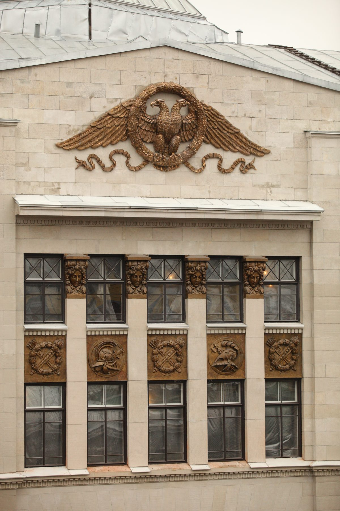
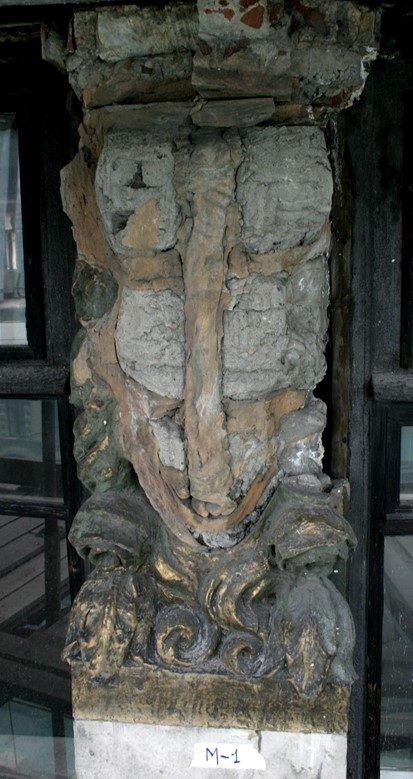
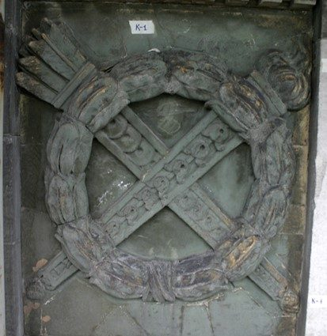
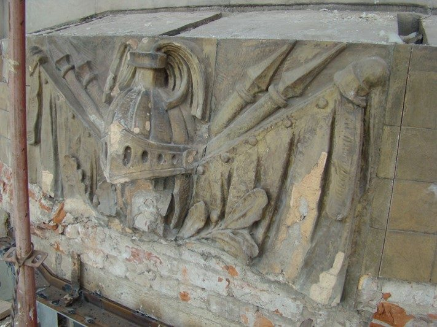
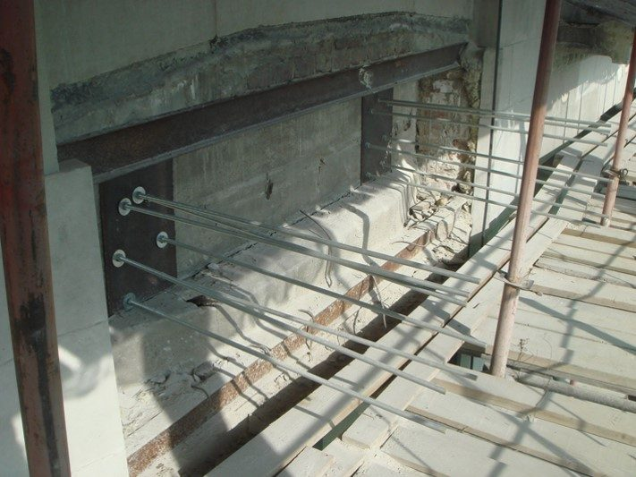
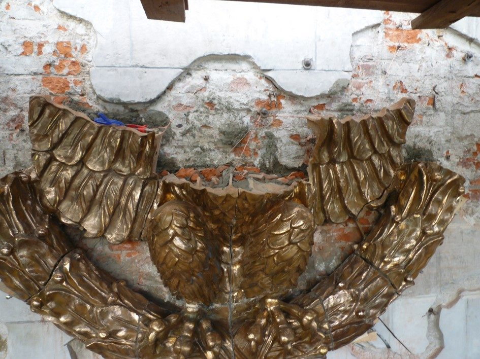
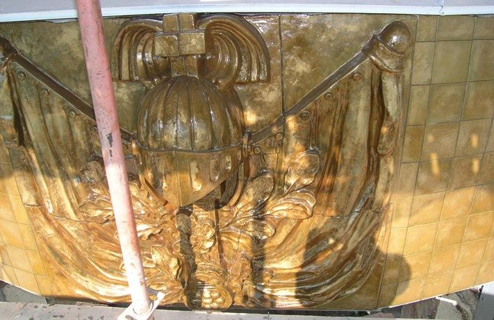

Керамический декор и герб Дома Ленинградской торговли


Керамическое убранство фасадов здания было создано в 1908–1909 годах художественно-керамическим производством «Гельдвейн — Ваулин».
Памятник
Маскароны, медальоны, картуши и орнаментальные элементы выполнили из металлизированной майолики, имитирующей бронзу. Благодаря этому керамический декор воспринимается как металлический даже на разной высоте и при различном освещении.
Утраты
В советское время была утрачена венчавшая фасад эмблема Гвардейского экономического общества — композиция шириной около семи метров с двуглавым орлом, державшим венок с лентами. На её месте долгие годы находилась аббревиатура ДЛТ. Сохранившиеся керамические элементы фасадов также нуждались в реставрации.
Что сделали
В 2006–2010 годах специалисты «Паллады» отреставрировали керамические панно и повреждённые элементы фасадного декора: маскароны, медальоны и картуши. Утраченную гербовую композицию с двуглавым орлом воссоздали и вернули на аттик здания.
Итог
В результате фасадам вернули первоначальную композиционную завершённость, сохранив одну из главных особенностей их оформления: историческая «бронза» ДЛТ в действительности является архитектурной керамикой.
Как шли работы





